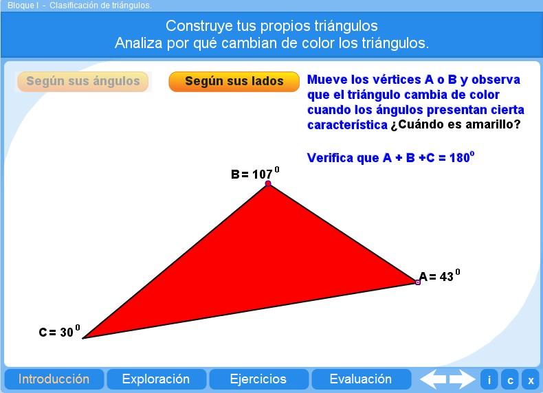
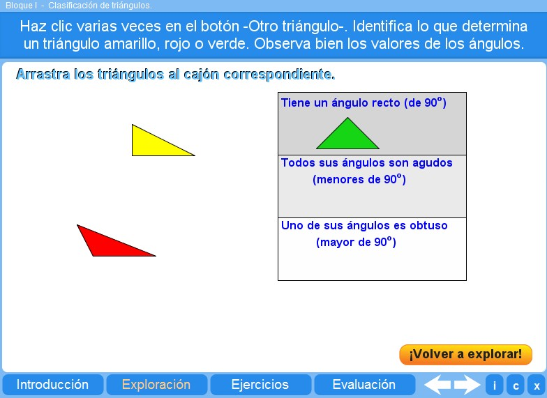
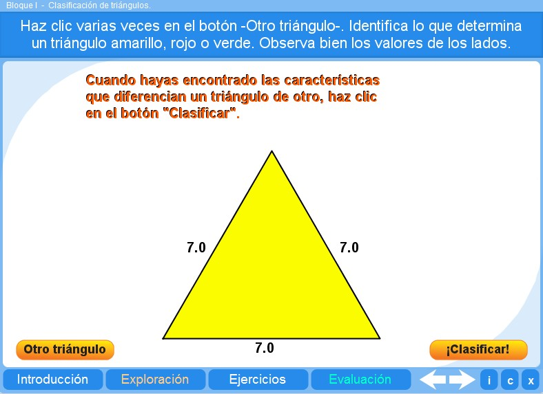
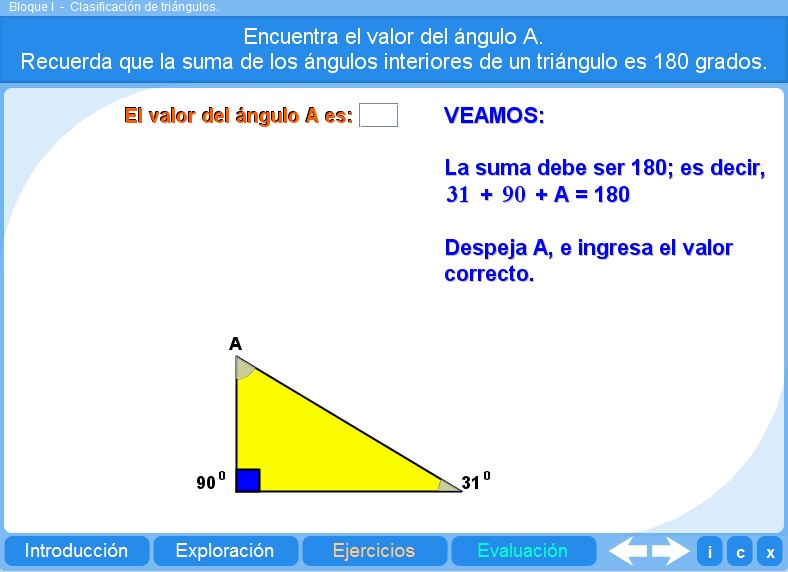
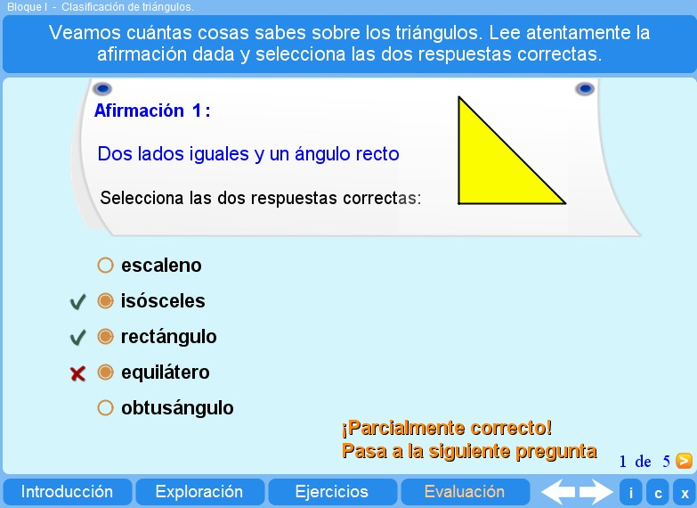

Objetivo
Ofrecer actividades que permitan al alumno identificar los diferentes tipos de triángulos.
Instrucciones generales
Se puede navegar entre los apartados con el menú de la parte inferior. Este menú aparece a lo largo de todo el interactivo y conserva su funcionalidad.
También se puede navegar por las escenas por medio de las flechas de navegación que aparecen en el lado inferior derecho del objeto de aprendizaje. Dentro de los apartados Exploración y Ejercicios es necesario utilizar estas flechas para acceder a las escenas sucesivas de dichos apartados.

En la parte inferior derecha del objeto de aprendizaje interactivo se encuentran los siguientes botones:
 |
Muestra la documentación del objeto de aprendizaje. |
 |
Despliega los créditos correspondientes. |
 |
Cierra la aplicación. |
Contenidos
Introducción
Permite un acercamiento a los diferentes tipos de triángulos, que se clasifican según sus lados o sus ángulos.

Exploración 1
Ofrece al alumno la oportunidad de establecer una clasificación según el tipo de ángulos.

Exploración 2
Ofrece al alumno la oportunidad de establecer una clasificación según el tipo de lados.

Ejercicio
El alumno puede practicar lo aprendido sobre la suma de ángulos interiores del triángulo con ejercicios que presentan valores aleatorios.

Evaluación
El alumno debe resolver los cinco problemas planteados, aplicando los conceptos aprendidos en los apartados anteriores.

| Los materiales aquí presentados utilizan el applet Descartes Web 2.0. | |
 |
Los contenidos de esta unidad didáctica están bajo una licencia de Creative Commons. |